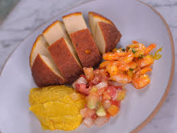

Restaurante Só Dendê
Onde você recarrega suas energias
Cardápio do Dia
Bobó de Camarão
Com sabor bem brasileiro, esse prato vai surpreender a todos!
R$ 40,00

INGREDIENTES
400 g de aipim já cozido
1 xícara (chá) da água do cozimento da mandioca (200 ml)
1 colher (sopa) de manteiga sem sal
1 cebola pequena picada
2 dentes de alho picados
2 tomates pequenos, sem pele e sem sementes, picados
meio pimentão vermelho médio, picado
500 g de camarões médios limpos
1 sachê de Tempero SAZÓN® Sabores do Nordeste
1 pitada de sal
Cardápio do Dia
Acarajé
Quitute tem origem africana, mas é considerado patrimônio cultural do Brasil.
R$ 20,00

INGREDIENTES
Acarajé
1kg de feijão fradinho
3 dentes de alho
Sal a gosto
1 cebola grande picada
Azeite de dendê para fritar
Vatapá
1 pão francês
1 vidro de leite de coco (200ml)
½ xícara (chá) de farinha de trigo
¼ de xícara (chá) de amendoim torrado e sem casca
¼ de xícara (chá) de castanha de caju torrada
1 colher (chá) de gengibre em lascas
Sal a gosto
2 pimentas dedo-de-moça com sementes
500g de camarão seco dessalgado ou camarão fresco
Coentro moído a gosto
½ xícara (chá) de azeite de dendê
2 dentes de alho
1 cebola picada
Cardápio do Dia
Moqueca de Peixe
A moqueca de peixe baiana tem sabor intenso e marcante, pois é preparada com ingredientes como leite de coco (de preferência natural), azeite de dendê, camarões e, em alguns casos, a pimenta se destaca no prato!
R$ 50,00

INGREDIENTES
600 gramas de peixe fresco em postas (limpo)
300 gramas de camarão fresco (limpo)
300 mililitros de leite de coco
½ pimentão amarelo
½ pimentão vermelho
3 dentes de alho
1 cebola branca em rodelas (grande)
1 tomate maduro
1 limão
4 colheres de sopa de azeite de dendê
1 colher de sopa de azeite de oliva
sal e pimenta do reino branca (a gosto)
pimenta dedo de moça ou de cheiro (opcional)
cheiro verde (a gosto)